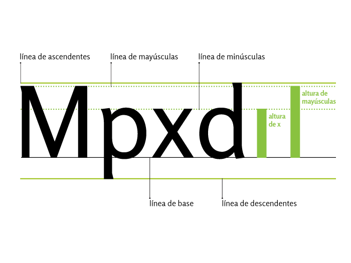

Uppercase, lowercase, numerals and symbols
Posted by OERT - Apr 27, 2012
Letter, Theory
Elaboración: Natalia Fernández, Paula Ibarra, Marcela Romero, Sol Vázquez
Artículo en proceso de traducción
When the rhythm of writing accelerated, letters overlapped, irregularities, ascenders and descenders appeared, and so did lower case. Now, those two systems, capitals and lower case, are used in combination, each one with different attributions. There are also other signs which we usually use to compose a text: punctuation, commercial, basic mathematical operators, monetary symbols, usual fractions, to name some.
The process of lower case invention began with the creation of semi-uncial writing which implied a gestural simplification in the drawing of capitals, influenced by the use of the pen and the writing speed. This process consolidated with Caroline minuscule writing.
Today they coexist and two different alphabetic systems with different structures complement each other: capitals and lower case.
Capitals were used for Greek and Roman tombstone inscriptions and maybe that is why they are used to show the importance of certain names or things. They are used at the beginning of sentences or proper names (except in the German language where nouns are capitalized also). They usually connote importance and respect.
Lower case is used for the majority of the actual text. Maybe due to its more functional than aesthetic origin, the connotation of this system is not as «serious» as that of the capitals.
Once the capitals and lower case systems consolidated, the modifications they underwent were practical and trendy ones, but the structure within each sign group was maintained. Though structural differences between both systems are wide and notorious, some relations may be established.
Baseline: it is the horizontal imaginary line on which almost all capitals rest.
Capitals height: it is the height of the capitals or upper case letters, it is measured from the baseline to the upper part of the capitals character.
X height: it is the height of the lower case or minuscule letters, not including ascenders or descenders. The letter «x»is taken as reference because its legs clearly define the baseline and its two upper strokes clearly define its height.
Ascender height: it is the imaginary line reached by the upper extremes of the ascender of a lower case.
Descender height: it is the imaginary line reached by the lower extremes of the descender of a lower case.
Ascender and descender: It is the part of the lower case that goes above the x height or below the baseline.
The proportional relations between these heights are specific to each typographic design. In some cases, the height of capitals coincides with the ascenders, or in others, the latter is slightly higher. These proportions, among other characteristics, are the ones that define the identity in each typeface family.
-

-

-

Capitals, lower case, and legibility
“Legibility is the degree to which glyphs (individual characters) in text are understandable or recognizable based on appearance. “The legibility of a typeface is related to the characteristics inherent in its design … which relate to the ability to distinguish one letter from the other.” Legibility includes factors such as “x-height, character shapes, stroke contrast, the size of its counters, serifs or lack thereof, and weight.” (Strizver, Ilene (2010). Type Rules: The Designer’s Guide to Professional Typography (3rd ed.). New Jersey: John Wiley & Sons.)
If we form a word only in capitals, the printed area it produces is regular, with a constant height. If we form words in both capitals and lower case the printed areas are irregular as each letter can occupy different areas of the printed area. These printed areas are specific for each word, thus making word identification quicker and easier to read. The printed are of the word (bouma), is recognized by the reader, decoded, not read word by word.

La mancha de la palabra (bouma), es reconocida por el lector, descifrada, no leída letra a letra.
Numbers
Though there is certain freedom in the design of letters, numbers do not give the designer the chance to exercise creativity in the use of form and proportion. Letters are read forming words, which can compensate a certain degree of ambiguity in their design, but numbers have to be deciphered on their own, with no help from the context.
Lowcase numbers (old style): Claude Garamond was one of the first typographers to study the design of numeric characters together with alphabetic characters. These numbers were devised to work as part of the text, thus its behavior is similar to that of the lower case.
In order for the zero not to be confused with the lower case «o», it usually has a different stroke modulation or the x-height is a bit higher and the ascenders or descenders are a bit shorter that lower case.
Capitals numbers: By the end of the XVIIIth century, due to the many scientific advances, a new kind of numerals known as upper case numbers or capital numbers appeared and they began to be used to document mathematic or technical texts.
These numbers have the same height as capital letters, though slightly lower in some cases. Also, as they all occupy the same width so that they may be vertically aligned when set in columns, they are also named tabular or monospaced numbers.
In this case, in order to avoid confusion between both, the zero number is usually thinner than the capital «O» letter, and this is the width used to determine the other numbers in the typeface family.

Numbers and spacing: the numbers may behave, from the point of view of spacing, like letters and create a uniform color. It tartar nontabular numbers and each will have its own width. Conversely, if the numbers are tabular, all have the same width and will be arranged in successive lines.

Los números minúsculos no producen rupturas en el ritmo del texto.
Numbers and heights: capitals numbers have a height similar to the uppercase letters, sometimes a little less. Similarly, the old style numbers share the stage with lowercase letters, also with slight variations. Zero, one and two similar height to that of “x”, the three, four, five, seven and nine, down, six and eight, ascend.
A la izquierda: números mayúsculos tabulares. A la derecha: números minúsculos de anchos variables.
Orthographic signs
Punctuation in written texts has the purpose of reproducing the intonation of spoken language. Much of the correct expression and understanding of written texts depends on it. These signs created to be read but not heard, are the tuning fork that determines the rhythm within the silent voice of typography. Punctuation marks tempo, tone, volume and unit separation, it organizes speech and its different elements and it helps avoid ambiguity in texts which, without it, might have different interpretations.
Among orthographic signs we have:
Punctuation marks: period, colon, comma, semicolon, and ellipsis marks.
Usually in the composition of the latter the repetition of a period is incorrectly used. This sign has a specially designed character, which contains a spacing that agrees with the idea of creating suspense, doubt, pause in discourse, giving it less spacing between periods.

Intonation marks:: Question and exclamation marks.
Auxiliary signs: parenthesis, square brackets, braces, hyphen, em dash, double quotes, lambda and antilamba, slash, backslash, divider line, asterisk, among others.
From the typographic point of view, orthographic signs may be divided in simple, i.e., with a single element, and double, which are distinguished because in their structure they have opposing figures to open and close: ‘ ’ , “ ”, « » , ¡ !, ¿ ?, ( ), [ ], < >.

These signs are composed in the following way:
- The opening ones are separated by means of a space after the word or sign before them, and they are written without a space separating them from the word after them.
- On the other hand, the closing signs are written without a space separating them from the word or sign before them, separated by a space from the word after them and without this space if what follows them is a punctuation mark.
Some signs, such as comma or the minus sign can play the role of a double sign without changing shape.
The design of punctuation marks
Punctuation marks are part of the design of a typeface family. As the other ones that conform it, they have constant and variable characteristics. Variable characteristics are the ones that constitute the peculiarities of a family. For instance: in the Roman families, the period is usually round, while in the sans serif ones it may be square, round, rectangular or rhomboidal, depending on the design and proportions of the family to which they belong. In alphabets with calligraphic influence, periods tend to be rhomboidal.
The weight a period should have is an important decision for two reasons: first, because it defines the weight of many of the other punctuation marks, and second, because it has to be heavy enough to be quickly perceived, but not too heavy so as to interfere in the appreciation of the other signs. Lesser weight punctuations such as the period or the comma are more closely associated to the weight of the family, while large structure punctuations, such as question or exclamation marks, have clear characteristics of the family style.
Invariable characteristics are those that have to do with the very structure of the sign, which have a historic origin. If we analyze punctuation marks in several different families, we will find that there are characteristics that do not change from one family to another, such as proportions, the basic structure that makes each sign recognizable as such, the relation these signs have with each other and the way they stand.
Sign alignment
We know that these punctuation marks rest on the baseline: . , …
Middle height signs, opening signs and question and exclamation marks should be aligned with the x-height and with the lower case descenders: <> ? ! + : ;
Those signs that go above the x-height should be aligned with the cap height: * ! ? “ ” ”
The following ancillary signs are aligned going slightly over the cap height and slightly below the baseline, as they have to include the descenders and their function is to contain text within them: ( ) [ ] { }
Most commercial and monetary signs have cap height, except for the cent: $ ¥ ¢ £


Fractions
Fractions are signs specially designed and spaced for the proper functioning. In most cases, mistakenly, two numbers with the same the body size as the rest of the text being composed are used, aligning them one next to the other separated by a dash which does not have the correct tilting. A fraction is an integrated sign, which has a special disposition in the signs that compose it.

The sign must be visualized as a unit and not as two numbers and a dash, thus the body of the numbers and the spacing of the dash are adjusted for better visualization.
Some typeface families have variables or expert sets with available fractions. There is a dash which is slightly more tilted than the traditional slash, to build fractions. Typefaces include them in the percent sign (%), per thousand (‰) and in the more usual fractions, yet very few have them in separate. In such a case, a cursive dash (⁄) can be used, which has a tilting which is correct to act as substitute.
- DE BUEN UNNA, Jorge. Manual de diseño editorial. 3.ª edición, corregida y aumentada. Trea Ediciones, España, 2009.
- MARTINEZ DE SOUSA, José. Manual de edición y autoedición, Pirámide, España, 1999.
- SOLOMON, Martin. El poder de la puntuación, Revista tpG
- MC LEAN, Ruari. Manual tipográfico, Tellus, Madrid, 1988.
- HALLEY, Allan. Alphabet, Thames&Hudson, Londres.
- BRINGHURST, Robert. Los elementos del estilo tipográfico, Libros sobre libros / Fondo de Cultura Económica, México, 2008.
Esta entrada también está disponible en: Spanish

Related Posts
-
Text, image, dingbats and decorative elements
April 27, 2012
Dingbats and decorative elements as elements of the typographic case. Function and types of dingbats and decorative elements. Double function: characters or image. Letters as images or characters. Relations.
-
Design and morphological operations with typography
April 27, 2012
Typeface family as a system. Aspects to be considered when designing a related group of characters: choosing the historical and cultural context, structural relations, stroke and terminal features. character weight and word color, distinctive characters and terminals. Axes for the construction of styles.
-
Typographic Programs
April 27, 2012
System of systems. Typographic programs, serial families and super families. Construction criteria. Uses. Description of some programs.
-
Typographic styles
April 27, 2012
Functions and convention in the use of styles. Traditional axes. Recognizing designed variants and the effects of digital distortion. Small capitals: character weight and line color.
 English
English Español
Español 
{kind=link}